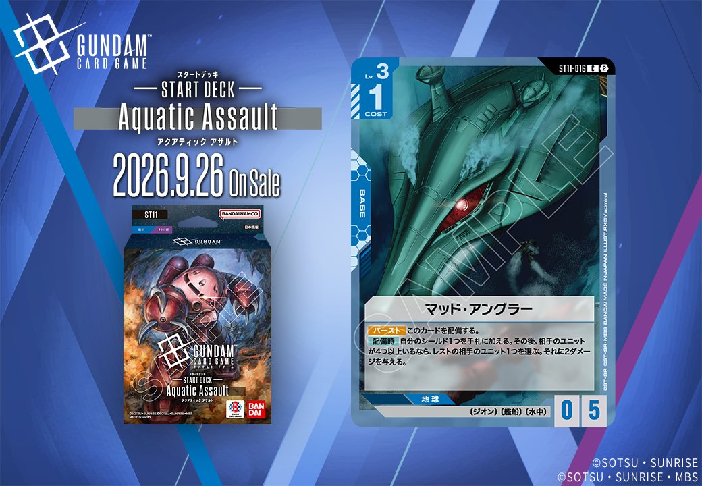
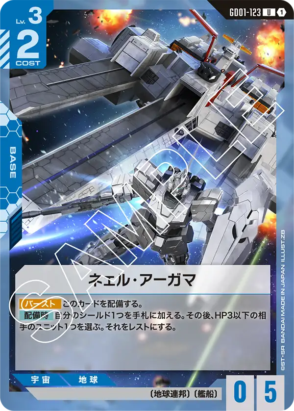
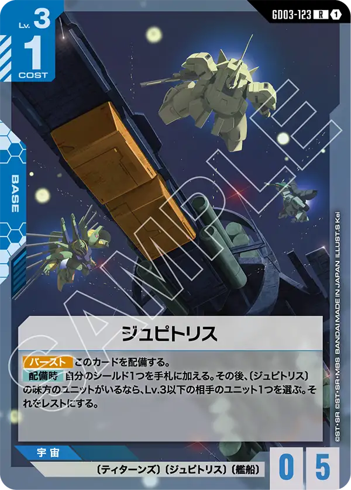

ST11「マッド・アングラー」(ST11-016)は、青のBASEとして収録される1枚です。発売日は2026-09-26となっており、この記事では認識データに基づいてカード情報を整理します。

マッド・アングラー (ST11-016)
| 色 | 青 | タイプ | BASE |
| Lv | 3 | コスト | 1 |
| AP | 0 | HP | 5 |
| 特徴 | 〔ジオン〕、〔艦船〕、〔水中〕 | ||
効果: 【バースト】このカードを配備する。【配備時】自分のシールド1つを手札に加える。その後、相手のユニットが4つ以上いるなら、レストの相手のユニット1つを選ぶ。それに2ダメージを与える。
マッド・アングラー(ST11-016)はCOST1・HP5のベースで、【バースト】と【配備時】でシールド1枚を手札に回収する点はホワイトベースやネェル・アーガマといった既存の艦船ベースと共通する。加えて相手のユニットが4つ以上いる場合、レストの相手ユニット1つに2ダメージを与えられる点が独自で、ネェル・アーガマが「レストにする」のに対しこちらは能動的な除去に寄っている。 ダメージ効果は相手が展開してユニット4つ以上を並べた盤面が前提で、序盤よりも相手が横に広げた終盤に機能しやすい。低コストでシールド回収とレストユニットへの2ダメージを兼ねる点で、〔艦船〕を採用する青系デッキで運用しやすい1枚。2026年9月26日発売、リンクは持たない。
関連カード
-
 ホワイトベース(ST01-015)青系デッキ内採用率12.8% (594デッキ)
ホワイトベース(ST01-015)青系デッキ内採用率12.8% (594デッキ) -
 リーンホースJr.(GD04-121)青系デッキ内採用率3.2% (151デッキ)
リーンホースJr.(GD04-121)青系デッキ内採用率3.2% (151デッキ) -

ネェル・アーガマ(GD01-123)青系デッキ内採用率1.5% (69デッキ) -

ジュピトリス(GD03-123)青系デッキ内採用率0.2% (8デッキ)